CODING AGENTS AS PIXEL WORLD MODELS
traex/GPT-6.1-Sol · 0042
点击播放 · 原生 RGB 像素
逐轮保存的候选
回放视频、检查图与代码变化。
每份候选均可单独播放。实际图片检查记录在下方工具轨迹中。
候选 01播放与检查图
点击播放 · 原生 RGB 像素
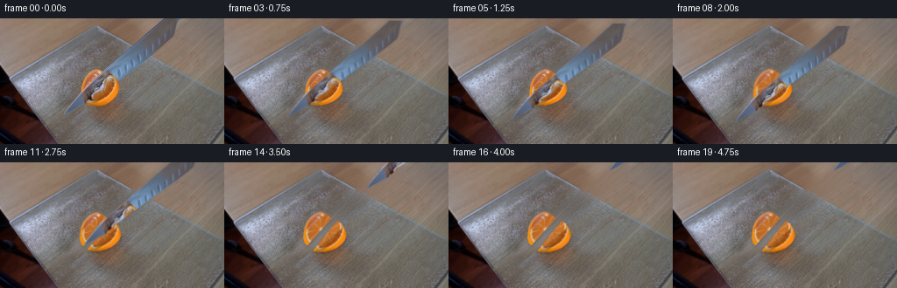
展开代码变化
--- 上一保存版本
+++ 本次保存版本
@@ -0,0 +1,159 @@
+from pathlib import Path
+import numpy as np
+from PIL import Image, ImageDraw
+import cv2
+from scipy.ndimage import gaussian_filter, map_coordinates
+import artifact_io
+
+ROOT=Path(__file__).resolve().parent
+I=np.asarray(Image.open(ROOT/'first_frame.png').convert('RGB'))
+H,W=144,256
+S=4
+# Hand-traced boundary of the visible steel, with subpixel edge coverage.
+knife_poly=[(72.8,110.1),(77.1,103.7),(89.0,87.6),(110.1,69.0),(136.8,45.7),(162.8,23.3),(188.9,-.5),(204.5,-.5),(202.2,6),(200.2,13.8),(198.2,20.5),(194.3,24.0),(177.0,37.1),(152.4,54.6),(129.7,71.3),(122.0,77.0),(107.0,88.0),(97.0,97.8)]
+def poly_mask(points, ss=S):
+ m=Image.new('L',(W*ss,H*ss)); ImageDraw.Draw(m).polygon([(round(x*ss),round(y*ss)) for x,y in points],fill=255)
+ return np.asarray(m.resize((W,H),Image.Resampling.LANCZOS))/255.
+KM=poly_mask(knife_poly)
+fruit_poly=[(92.5,83.8),(93.2,77),(95.6,70.5),(100,64.8),(104.3,60.8),(109.6,58.5),(113,58.3),(117.8,60.3),(121,63),(125.5,65.1),(129.2,67.1),(132.3,71.6),(134.8,77.6),(135.3,82.0),(133.0,87.5),(129.3,91.5),(123.9,95.2),(118.1,97.7),(110.8,99.6),(104.2,100),(97.4,98.0),(94.0,94.4),(92.3,89.0)]
+FM=poly_mask(fruit_poly)
+mask=np.uint8(((KM>.01)|(FM>.01))*255)
+mask=cv2.dilate(mask,np.ones((3,3),np.uint8))
+y,x=np.mgrid[:H,:W].astype(float)
+board=(y>.535*x-50.7)&(y>-.585*x+73.5)
+# Reconstruct hidden static background from the two original surface textures.
+bg=cv2.inpaint(I,mask,5,cv2.INPAINT_TELEA).astype(float)
+# Texture and lighting extrapolation, entirely from visible areas of the still.
+small=cv2.GaussianBlur(I.astype(float),(0,0),1.4)
+high=I-small
+for is_board in [True,False]:
+ area=board if is_board else ~board
+ valid=area&(mask==0)
+ # Only the table-top (not the black chair and far lower-left) contributes.
+ if not is_board: valid &= (y<.535*x-51)&(x>65)
+ X=x/W;Y=y/H
+ terms=[np.ones_like(X),X,Y,X*X,X*Y,Y*Y]
+ if is_board: terms += [X**3,X*X*Y,X*Y*Y,Y**3,X**4,X**3*Y,X*X*Y*Y,X*Y**3,Y**4]
+ A=np.stack(terms,-1)
+ coef=np.linalg.lstsq(A[valid],small[valid],rcond=None)[0]
+ fit=A@coef
+ tx=x.copy();ty=y.copy()
+ if is_board:
+ tx=x+36; ty=y+35
+ # Rectified texture sample comes from the large unoccluded lower-right board.
+ tx=140+(x%70);ty=84+(y%48)
+ else:
+ tx=210+(x%40);ty=8+(y%29)
+ tex=np.stack([map_coordinates(high[:,:,c],[ty,tx],order=1,mode='reflect') for c in range(3)],-1)
+ sel=area&(mask>0)
+ # Harmonic/inpaint color near the original rim; polynomial in the hidden interior.
+ dist=cv2.distanceTransform(np.uint8(mask>0),cv2.DIST_L2,5)
+ a=np.clip(dist/7,0,1)[:,:,None]
+ recon=bg*(1-a)+fit*a+tex*np.clip(dist/3,0,1)[:,:,None]*.85
+ bg[sel]=recon[sel]
+# Subtle glass edge where it was behind the blade.
+bg=np.clip(bg,0,255)
+Image.fromarray(bg.astype('uint8')).save(ROOT/'.tmp/background.png')
+
+# Fine citrus surface, parametrized on the oblique cut face.
+# Coordinates in the plane: long axis upper-left to bottom-right?
+# Elliptic axes are estimated from the original fruit outline.
+xx,yy=np.meshgrid(np.arange(W*S)/S,np.arange(H*S)/S)
+cx,cy=112.65,77.0
+# major axis runs down/right; the apparent side-wall sits farther down/right.
+u=(xx-cx)*.635+(yy-cy)*-.773
+v=(xx-cx)*.773+(yy-cy)*.635
+r=np.sqrt((u/21.7)**2+(v/15.0)**2)
+ang=np.arctan2(v/15.,u/21.7)
+rng=np.random.default_rng(11)
+noise=rng.normal(0,1,(H*S,W*S)); noise=cv2.GaussianBlur(noise,(0,0),.6)
+noise2=rng.normal(0,1,(H*S,W*S)); noise2=cv2.GaussianBlur(noise2,(0,0),2.2)
+# Wedge membranes with irregular white connective tissue.
+angles=np.array([-3.08,-2.40,-1.7,-1.0,-.24,.46,1.17,1.89,2.60])
+amin=np.min(np.abs(np.angle(np.exp(1j*(ang[:,:,None]-angles)))),axis=2)
+mem=np.exp(-(amin/0.033)**2)*np.clip((r-.14)/.12,0,1)
+vein=(np.sin(u*7+v*3+noise2*2)*np.sin(v*10-u*4)>.73).astype(float)
+shade=5*np.sin(ang*3)+8*v/15
+flesh=np.zeros((H*S,W*S,3),float)
+flesh[:,:,0]=193+shade+noise*14+noise2*15+vein*20
+flesh[:,:,1]=109+shade*.7+noise*13+noise2*13+vein*14
+flesh[:,:,2]=41+shade*.3+noise*7+noise2*8+vein*9
+white=np.array([222,198,150])
+flesh=flesh*(1-mem[:,:,None]*.58)+white*mem[:,:,None]*.58
+pith=np.clip((r-.84)/.045,0,1)*np.clip((.99-r)/.035,0,1)
+flesh=flesh*(1-pith[:,:,None]*.8)+np.array([229,204,151])*pith[:,:,None]*.8
+peel=np.clip((r-.965)/.05,0,1)
+peel_rgb=np.stack([239+noise*6,142+noise*8,18+noise*4],-1)
+flesh=flesh*(1-peel[:,:,None])+peel_rgb*peel[:,:,None]
+core=np.exp(-((u+1)**2/6+(v-.3)**2/3))
+flesh=flesh*(1-core[:,:,None]*.85)+np.array([237,221,182])*core[:,:,None]*.85
+fruit=cv2.resize(np.clip(flesh,0,255).astype(np.float32),(W,H),interpolation=cv2.INTER_AREA)
+# Use the original photographed pulp, rind and skin wherever visible; fill only steel occlusion.
+known=(1-KM)*FM
+# Pad knife mask slightly to avoid steel-contaminated antialias pixels in the fruit.
+unknown=cv2.dilate(np.uint8(KM>.03),np.ones((3,3),np.uint8)).astype(float)
+unknown=cv2.GaussianBlur(unknown,(0,0),.65)
+fruit=I.astype(float)*(1-unknown[:,:,None])+fruit*unknown[:,:,None]
+# The smooth mask retains the natural silhouette, split by the actual cutting plane.
+# The quarter at upper-left and quarter at lower-right separate perpendicular to knife.
+cut=(x-111.0)*.76+(y-80.0)*.65
+back=FM*np.clip(.5-cut/.65,0,1)
+front=FM-back
+Image.fromarray(np.uint8(np.clip(fruit*FM[:,:,None]+bg*(1-FM[:,:,None]),0,255))).save(ROOT/'.tmp/fruit_rebuilt.png')
+
+# Isolate steel and extend color a little outside its boundary for subpixel transforms.
+from scipy.ndimage import distance_transform_edt
+_,ind=distance_transform_edt(KM<.7,return_indices=True)
+knife_rgb=I[ind[0],ind[1]].astype(float)
+knife_rgb[KM>.7]=I[KM>.7]
+
+# Similar edge-color extension for each quarter avoids dark halos during rigid movement.
+def extend(rgb,alpha):
+ _,idx=distance_transform_edt(alpha<.85,return_indices=True)
+ out=rgb[idx[0],idx[1]].copy();out[alpha>.85]=rgb[alpha>.85];return out
+back_rgb=extend(fruit,back);front_rgb=extend(fruit,front)
+def transformed(rgb,alpha,dx,dy,rotation=0,center=(112,80)):
+ mat=cv2.getRotationMatrix2D(center,rotation,1)
+ mat[:,2]+=[dx,dy]
+ a=cv2.warpAffine(alpha.astype(np.float32),mat,(W,H),flags=cv2.INTER_LINEAR,borderMode=cv2.BORDER_CONSTANT)
+ p=cv2.warpAffine((rgb*alpha[:,:,None]).astype(np.float32),mat,(W,H),flags=cv2.INTER_LINEAR,borderMode=cv2.BORDER_CONSTANT)
+ return p,a
+
+def composite(base,rgb,alpha,dx=0,dy=0,rotation=0,center=(112,80)):
+ p,a=transformed(rgb,alpha,dx,dy,rotation,center)
+ return base*(1-a[:,:,None])+p
+
+def smooth(t): return (np.clip(t,0,1)**2)*(3-2*np.clip(t,0,1))
+frames=[]
+for n in range(20):
+ if n==0: frames.append(I.copy());continue
+ t=n/4
+ down=smooth(t/2.05)
+ withdraw=smooth((t-2.20)/1.8)
+ # Blade drives into the fruit, then rises along its own long axis and leaves the frame.
+ dx=-2.0*down+112*withdraw
+ dy=8.8*down-109*withdraw
+ separation=smooth((t-1.20)/2.7)
+ # Very small displacement under pressure, then the severed pieces settle on the board.
+ bx=-2.0*separation;by=-1.6*separation
+ fx=4.3*separation;fy=3.1*separation
+ frame=bg.copy()
+ # Use the original unoccluded backdrop exactly, including tiny stationary reflections.
+ # Soft contact shadows follow each piece.
+ for alpha,ox,oy,opacity in [(back,bx,by,.19),(front,fx,fy,.21)]:
+ _,a=transformed(fruit,alpha,ox+.2,oy+1.7)
+ a=cv2.GaussianBlur(a,(0,0),1.5)
+ frame*=1-a[:,:,None]*opacity
+ frame=composite(frame,back_rgb,back,bx,by,-1.5*separation)
+ frame=composite(frame,front_rgb,front,fx,fy,1.8*separation)
+ # Thin pale flesh on the new cut surface appears when the edge clears it.
+ # Blade itself stays sharply metallic, with a faint displaced shadow.
+ _,shadow=transformed(knife_rgb,KM,dx+.8,dy+2.0)
+ shadow=cv2.GaussianBlur(shadow,(0,0),2.3)
+ # shadow is only cast on glass, not the open portion over the table boundary
+ frame*=1-shadow[:,:,None]*.065*board[:,:,None]
+ frame=composite(frame,knife_rgb,KM,dx,dy)
+ # Camera is stationary, with no global color or exposure changes.
+ frames.append(np.uint8(np.clip(frame,0,255)))
+frames=np.array(frames,dtype=np.uint8)
+artifact_io.save(frames,ROOT)
候选 02播放与检查图
点击播放 · 原生 RGB 像素
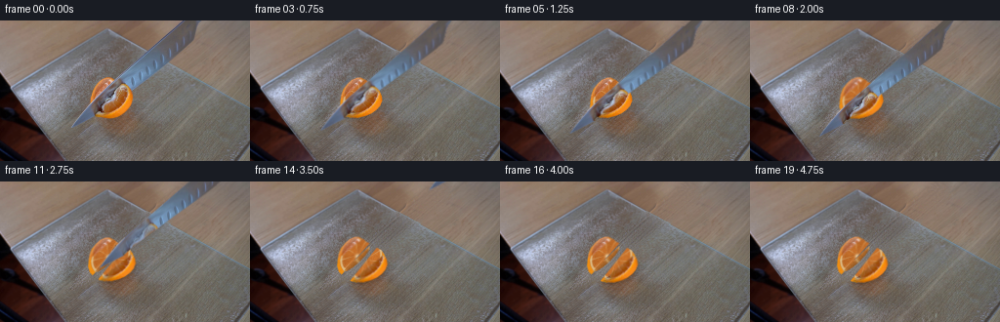
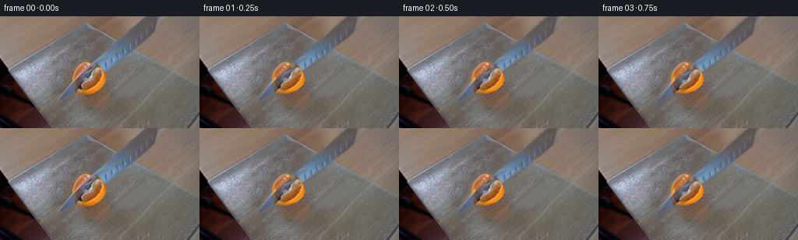
展开代码变化
--- 上一保存版本
+++ 本次保存版本
@@ -17,7 +17,7 @@
KM=poly_mask(knife_poly)
fruit_poly=[(92.5,83.8),(93.2,77),(95.6,70.5),(100,64.8),(104.3,60.8),(109.6,58.5),(113,58.3),(117.8,60.3),(121,63),(125.5,65.1),(129.2,67.1),(132.3,71.6),(134.8,77.6),(135.3,82.0),(133.0,87.5),(129.3,91.5),(123.9,95.2),(118.1,97.7),(110.8,99.6),(104.2,100),(97.4,98.0),(94.0,94.4),(92.3,89.0)]
FM=poly_mask(fruit_poly)
-mask=np.uint8(((KM>.01)|(FM>.01))*255)
+mask=np.uint8(((KM>.00001)|(FM>.00001))*255)
mask=cv2.dilate(mask,np.ones((3,3),np.uint8))
y,x=np.mgrid[:H,:W].astype(float)
board=(y>.535*x-50.7)&(y>-.585*x+73.5)
@@ -39,19 +39,20 @@
fit=A@coef
tx=x.copy();ty=y.copy()
if is_board:
- tx=x+36; ty=y+35
- # Rectified texture sample comes from the large unoccluded lower-right board.
- tx=140+(x%70);ty=84+(y%48)
+ tx=x+33;ty=y+29
else:
- tx=210+(x%40);ty=8+(y%29)
+ tx=x+39;ty=y-6
tex=np.stack([map_coordinates(high[:,:,c],[ty,tx],order=1,mode='reflect') for c in range(3)],-1)
sel=area&(mask>0)
# Harmonic/inpaint color near the original rim; polynomial in the hidden interior.
dist=cv2.distanceTransform(np.uint8(mask>0),cv2.DIST_L2,5)
a=np.clip(dist/7,0,1)[:,:,None]
- recon=bg*(1-a)+fit*a+tex*np.clip(dist/3,0,1)[:,:,None]*.85
+ recon=bg*(1-a)+fit*a+tex*np.clip(dist/3,0,1)[:,:,None]*1.45
bg[sel]=recon[sel]
-# Subtle glass edge where it was behind the blade.
+# Anti-aliased frosted glass boundary, reconstructed only where it was covered.
+edge_dist=y-(.5475*x-52.0)
+edge=np.exp(-((edge_dist-.15)/.47)**2)*.40*(mask>0)
+bg=bg*(1-edge[:,:,None])+np.array([136,158,169])*edge[:,:,None]
bg=np.clip(bg,0,255)
Image.fromarray(bg.astype('uint8')).save(ROOT/'.tmp/background.png')
@@ -106,6 +107,57 @@
_,ind=distance_transform_edt(KM<.7,return_indices=True)
knife_rgb=I[ind[0],ind[1]].astype(float)
knife_rgb[KM>.7]=I[KM>.7]
+# Reflective steel under the fruit's reflection. The orange reflection fades as the
+# blade moves away from the fruit, rather than being a painted image on the knife.
+u0=(x-73)*.756-(y-110)*.654
+v0=(x-73)*.654+(y-110)*.756
+steel_known=(KM>.85)&(FM<.01)
+P=np.stack([np.ones_like(x),u0/170,v0/18,(u0/170)**2,(v0/18)**2,u0*v0/(170*18)],-1)
+cf=np.linalg.lstsq(P[steel_known],I[steel_known].astype(float),rcond=None)[0]
+clean=np.clip(P@cf,0,255)
+reflection=cv2.GaussianBlur((KM*FM).astype(np.float32),(0,0),1.6)
+knife_clean=knife_rgb*(1-reflection[:,:,None])+clean*reflection[:,:,None]
+# Extend the offscreen end of the blade so a downstroke never reveals a clipped cap.
+PAD=48
+KH=H+PAD
+knife_alpha=np.zeros((KH,W),np.float32);knife_alpha[PAD:]=KM
+knife_texture=np.zeros((KH,W,3),np.float32);knife_texture[PAD:]=knife_rgb
+knife_texture_clean=knife_texture.copy();knife_texture_clean[PAD:]=knife_clean
+ext=Image.new('L',(W*S,KH*S));ed=ImageDraw.Draw(ext)
+ed.polygon([(round(a*S),round((b+PAD)*S)) for a,b in [(188.9,1),(204.5,1),(217,-20),(245,-48),(243,-48),(212,-20)]],fill=255)
+e=np.asarray(ext.resize((W,KH),Image.Resampling.LANCZOS))/255.
+for j in range(PAD+1):
+ for k in range(W):
+ if e[j,k]>0:
+ srcx=int(np.clip(k+(j-PAD)*.92,189,203))
+ c=I[0,srcx].astype(float)
+ knife_texture[j,k]=c;knife_texture_clean[j,k]=c
+knife_alpha=np.maximum(knife_alpha,e)
+def draw_knife(frame,dx,dy,clear):
+ mat=np.float32([[1,0,dx],[0,1,dy-PAD]])
+ tex=knife_texture*(1-clear)+knife_texture_clean*clear
+ a=cv2.warpAffine(knife_alpha,mat,(W,H),flags=cv2.INTER_LINEAR)
+ p=cv2.warpAffine(tex*knife_alpha[:,:,None],mat,(W,H),flags=cv2.INTER_LINEAR)
+ return frame*(1-a[:,:,None])+p
+
+# The newly exposed vertical flesh on the back quarter has a shallow convex foot,
+# not a featureless two-dimensional slash. The lower lip reaches the glass.
+A=np.array([97.6,93.6]);B=np.array([124.3,67.0])
+vect=B-A
+q=((x-A[0])*vect[0]+(y-A[1])*vect[1])/(vect@vect)
+liney=A[1]+q*vect[1]
+linex=A[0]+q*vect[0]
+d=(x-linex)*.707+(y-liney)*.707
+thick=4.8*np.sqrt(np.clip(1-(2*q-1)**2,0,1))
+cutalpha=np.clip(d*3+.5,0,1)*np.clip((thick-d)*3+.5,0,1)*(q>=0)*(q<=1)
+cvnoise=cv2.GaussianBlur(rng.normal(0,1,(H,W)),(0,0),.35)
+side=np.stack([186+cvnoise*7,112+cvnoise*6,45+cvnoise*4],-1)
+shade=np.clip(d/(thick+.01),0,1)
+side*=1-shade[:,:,None]*.21
+pithline=np.exp(-((q-.49)/.042)**2)*.48+np.exp(-((q-.96)/.055)**2)*.5+np.exp(-((q-.04)/.055)**2)*.5
+side=side*(1-pithline[:,:,None])+np.array([225,200,145])*pithline[:,:,None]
+side=extend(side,cutalpha) if False else side
+
# Similar edge-color extension for each quarter avoids dark halos during rigid movement.
def extend(rgb,alpha):
@@ -131,12 +183,12 @@
down=smooth(t/2.05)
withdraw=smooth((t-2.20)/1.8)
# Blade drives into the fruit, then rises along its own long axis and leaves the frame.
- dx=-2.0*down+112*withdraw
- dy=8.8*down-109*withdraw
+ dx=-2.0*down+139*withdraw
+ dy=8.8*down-136*withdraw
separation=smooth((t-1.20)/2.7)
# Very small displacement under pressure, then the severed pieces settle on the board.
- bx=-2.0*separation;by=-1.6*separation
- fx=4.3*separation;fy=3.1*separation
+ bx=-2.9*separation;by=-1.8*separation
+ fx=5.6*separation;fy=3.7*separation
frame=bg.copy()
# Use the original unoccluded backdrop exactly, including tiny stationary reflections.
# Soft contact shadows follow each piece.
@@ -145,6 +197,7 @@
a=cv2.GaussianBlur(a,(0,0),1.5)
frame*=1-a[:,:,None]*opacity
frame=composite(frame,back_rgb,back,bx,by,-1.5*separation)
+ frame=composite(frame,side,cutalpha*smooth((t-2.3)/.55),bx,by,-1.5*separation)
frame=composite(frame,front_rgb,front,fx,fy,1.8*separation)
# Thin pale flesh on the new cut surface appears when the edge clears it.
# Blade itself stays sharply metallic, with a faint displaced shadow.
@@ -152,7 +205,7 @@
shadow=cv2.GaussianBlur(shadow,(0,0),2.3)
# shadow is only cast on glass, not the open portion over the table boundary
frame*=1-shadow[:,:,None]*.065*board[:,:,None]
- frame=composite(frame,knife_rgb,KM,dx,dy)
+ frame=draw_knife(frame,dx,dy,smooth((t-2.4)/.6))
# Camera is stationary, with no global color or exposure changes.
frames.append(np.uint8(np.clip(frame,0,255)))
frames=np.array(frames,dtype=np.uint8)
候选 03播放与检查图
点击播放 · 原生 RGB 像素
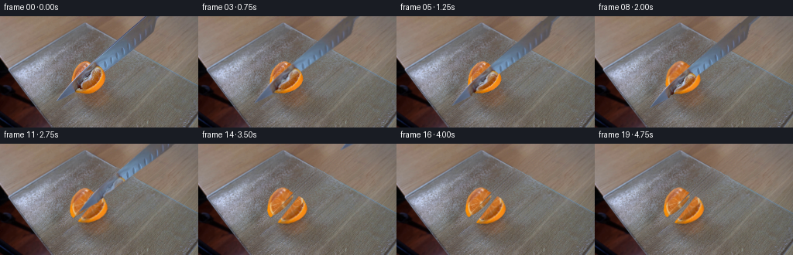
展开代码变化
--- 上一保存版本
+++ 本次保存版本
@@ -2,7 +2,7 @@
import numpy as np
from PIL import Image, ImageDraw
import cv2
-from scipy.ndimage import gaussian_filter, map_coordinates
+from scipy.ndimage import gaussian_filter, map_coordinates, distance_transform_edt
import artifact_io
ROOT=Path(__file__).resolve().parent
@@ -41,7 +41,7 @@
if is_board:
tx=x+33;ty=y+29
else:
- tx=x+39;ty=y-6
+ tx=215+(x%34);ty=4+(y%27)
tex=np.stack([map_coordinates(high[:,:,c],[ty,tx],order=1,mode='reflect') for c in range(3)],-1)
sel=area&(mask>0)
# Harmonic/inpaint color near the original rim; polynomial in the hidden interior.
@@ -89,6 +89,10 @@
core=np.exp(-((u+1)**2/6+(v-.3)**2/3))
flesh=flesh*(1-core[:,:,None]*.85)+np.array([237,221,182])*core[:,:,None]*.85
fruit=cv2.resize(np.clip(flesh,0,255).astype(np.float32),(W,H),interpolation=cv2.INTER_AREA)
+local_pulp=(FM>.85)&(KM<.01)&(I[:,:,0]>I[:,:,1]*1.17)&(I[:,:,1]>65)&(I[:,:,1]<160)
+_,pidx=distance_transform_edt(~local_pulp,return_indices=True)
+real_detail=(I.astype(float)-cv2.GaussianBlur(I.astype(float),(0,0),1.1))[pidx[0],pidx[1]]
+fruit+=real_detail*.50
# Use the original photographed pulp, rind and skin wherever visible; fill only steel occlusion.
known=(1-KM)*FM
# Pad knife mask slightly to avoid steel-contaminated antialias pixels in the fruit.
@@ -124,12 +128,12 @@
knife_texture=np.zeros((KH,W,3),np.float32);knife_texture[PAD:]=knife_rgb
knife_texture_clean=knife_texture.copy();knife_texture_clean[PAD:]=knife_clean
ext=Image.new('L',(W*S,KH*S));ed=ImageDraw.Draw(ext)
-ed.polygon([(round(a*S),round((b+PAD)*S)) for a,b in [(188.9,1),(204.5,1),(217,-20),(245,-48),(243,-48),(212,-20)]],fill=255)
+ed.polygon([(round(a*S),round((b+PAD)*S)) for a,b in [(188.9,1),(204.5,1),(261,-48),(245,-48)]],fill=255)
e=np.asarray(ext.resize((W,KH),Image.Resampling.LANCZOS))/255.
for j in range(PAD+1):
for k in range(W):
if e[j,k]>0:
- srcx=int(np.clip(k+(j-PAD)*.92,189,203))
+ srcx=int(np.clip(k+(j-PAD)*1.15,189,203))
c=I[0,srcx].astype(float)
knife_texture[j,k]=c;knife_texture_clean[j,k]=c
knife_alpha=np.maximum(knife_alpha,e)
@@ -156,7 +160,6 @@
side*=1-shade[:,:,None]*.21
pithline=np.exp(-((q-.49)/.042)**2)*.48+np.exp(-((q-.96)/.055)**2)*.5+np.exp(-((q-.04)/.055)**2)*.5
side=side*(1-pithline[:,:,None])+np.array([225,200,145])*pithline[:,:,None]
-side=extend(side,cutalpha) if False else side
# Similar edge-color extension for each quarter avoids dark halos during rigid movement.
可观测工具轨迹
实际执行的命令与返回图片。
命令 1exit 0
/bin/bash -lc "ls -la && cat prompt.txt && printf '\\n---RULES---\\n' && cat GENERATION_RULES.md"
命令 2exit 0
/bin/bash -lc "cat artifact_io.py && python - <<'PY'
from PIL import Image
im=Image.open('first_frame.png'); print(im.size); im.resize((1024,576)).save('.tmp/enlarged.png')
PY"命令 3exit 0
/bin/bash -lc "python - <<'PY'
import PIL.Image as I
im=I.open('first_frame.png'); im.crop((65,48,150,115)).resize((850,670)).save('.tmp/crop.png')
import importlib.util
for name in ['numpy','scipy','cv2','PIL']:
print(name, bool(importlib.util.find_spec(name)))
PY"命令 4exit 0
/bin/bash -lc "python - <<'PY'
from PIL import Image,ImageDraw
im=Image.open('first_frame.png').resize((1024,576));d=ImageDraw.Draw(im)
for x in range(0,256,10):
d.line((x*4,0,x*4,576),fill=(255,0,0,90));d.text((x*4+1,1),str(x),fill='white')
for y in range(0,144,10):
d.line((0,y*4,1024,y*4),fill=(255,0,0,90)); d.text((1,y*4+1),str(y),fill='white')
im.save('.tmp/grid.png')
PY"命令 5exit 0
/bin/bash -lc "cat > .tmp/outline.py <<'PY'
from PIL import Image,ImageDraw
im=Image.open('first_frame.png').resize((1024,576)); d=ImageDraw.Draw(im)
p=[(73,110),(77,104),(89,88),(110,69),(137,45),(163,23),(189,-1),(205,-1),(202,6),(200,13),(198,20),(194,24),(177,37),(152,55),(130,71),(122,77),(107,88),(97,98)]
p=[(x*4,y*4) for x,y in p]; d.line(p+[p[0]],fill='red',width=2)
for x,y in [(100,60),(90,80),(100,100),(120,60),(130,70),(140,60),(150,40),(180,20)]: d.text((x*4,y*4),f'{x},{y}',fill='white')
im.save('.tmp/outline.png')
PY
python .tmp/outline.py"命令 6exit 0
/bin/bash -lc "cat > generate.py <<'PY'
from pathlib import Path
import numpy as np
from PIL import Image, ImageDraw
import cv2
from scipy.ndimage import gaussian_filter, map_coordinates
import artifact_io
ROOT=Path(__file__).resolve().parent
I=np.asarray(Image.open(ROOT/'first_frame.png').convert('RGB'))
H,W=144,256
S=4
# Hand-traced boundary of the visible steel, with subpixel edge coverage.
knife_poly=[(72.8,110.1),(77.1,103.7),(89.0,87.6),(110.1,69.0),(136.8,45.7),(162.8,23.3),(188.9,-.5),(204.5,-.5),(202.2,6),(200.2,13.8),(198.2,20.5),(194.3,24.0),(177.0,37.1),(152.4,54.6),(129.7,71.3),(122.0,77.0),(107.0,88.0),(97.0,97.8)]
def poly_mask(points, ss=S):
m=Image.new('L',(W*ss,H*ss)); ImageDraw.Draw(m).polygon([(round(x*ss),round(y*ss)) for x,y in points],fill=255)
return np.asarray(m.resize((W,H),Image.Resampling.LANCZOS))/255.
KM=poly_mask(knife_poly)
fruit_poly=[(92.5,83.8),(93.2,77),(95.6,70.5),(100,64.8),(104.3,60.8),(109.6,58.5),(113,58.3),(117.8,60.3),(121,63),(125.5,65.1),(129.2,67.1),(132.3,71.6),(134.8,77.6),(135.3,82.0),(133.0,87.5),(129.3,91.5),(123.9,95.2),(118.1,97.7),(110.8,99.6),(104.2,100),(97.4,98.0),(94.0,94.4),(92.3,89.0)]
FM=poly_mask(fruit_poly)
mask=np.uint8(((KM>.01)|(FM>.01))*255)
mask=cv2.dilate(mask,np.ones((3,3),np.uint8))
y,x=np.mgrid[:H,:W].astype(float)
board=(y>.535*x-50.7)&(y>-.585*x+73.5)
# Reconstruct hidden static background from the two original surface textures.
bg=cv2.inpaint(I,mask,5,cv2.INPAINT_TELEA).astype(float)
# Texture and lighting extrapolation, entirely from visible areas of the still.
small=cv2.GaussianBlur(I.astype(float),(0,0),1.4)
high=I-small
for is_board in [True,False]:
area=board if is_board else ~board
valid=area&(mask==0)
# Only the table-top (not the black chair and far lower-left) contributes.
if not is_board: valid &= (y<.535*x-51)&(x>65)
X=x/W;Y=y/H
terms=[np.ones_like(X),X,Y,X*X,X*Y,Y*Y]
if is_board: terms += [X**3,X*X*Y,X*Y*Y,Y**3,X**4,X**3*Y,X*X*Y*Y,X*Y**3,Y**4]
A=np.stack(terms,-1)
coef=np.linalg.lstsq(A[valid],small[valid],rcond=None)[0]
fit=A@coef
tx=x.copy();ty=y.copy()
if is_board:
tx=x+36; ty=y+35
# Rectified texture sample comes from the large unoccluded lower-right board.
tx=140+(x%70);ty=84+(y%48)
else:
tx=210+(x%40);ty=8+(y%29)
tex=np.stack([map_coordinates(high[:,:,c],[ty,tx],order=1,mode='reflect') for c in range(3)],-1)
sel=area&(mask>0)
# Harmonic/inpaint color near the original rim; polynomial in the hidden interior.
dist=cv2.distanceTransform(np.uint8(mask>0),cv2.DIST_L2,5)
a=np.clip(dist/7,0,1)[:,:,None]
recon=bg*(1-a)+fit*a+tex*np.clip(dist/3,0,1)[:,:,None]*.85
bg[sel]=recon[sel]
# Subtle glass edge where it was behind the blade.
bg=np.clip(bg,0,255)
Image.fromarray(bg.astype('uint8')).save(ROOT/'.tmp/background.png')
# Fine citrus surface, parametrized on the oblique cut face.
# Coordinates in the plane: long axis upper-left to bottom-right?
# Elliptic axes are estimated from the original fruit outline.
xx,yy=np.meshgrid(np.arange(W*S)/S,np.arange(H*S)/S)
cx,cy=112.65,77.0
# major axis runs down/right; the apparent side-wall sits farther down/right.
u=(xx-cx)*.635+(yy-cy)*-.773
v=(xx-cx)*.773+(yy-cy)*.635
r=np.sqrt((u/21.7)**2+(v/15.0)**2)
ang=np.arctan2(v/15.,u/21.7)
rng=np.random.default_rng(11)
noise=rng.normal(0,1,(H*S,W*S)); noise=cv2.GaussianBlur(noise,(0,0),.6)
noise2=rng.normal(0,1,(H*S,W*S)); noise2=cv2.GaussianBlur(noise2,(0,0),2.2)
# Wedge membranes with irregular white connective tissue.
angles=np.array([-3.08,-2.40,-1.7,-1.0,-.24,.46,1.17,1.89,2.60])
amin=np.min(np.abs(np.angle(np.exp(1j*(ang[:,:,None]-angles)))),axis=2)
mem=np.exp(-(amin/0.033)**2)*np.clip((r-.14)/.12,0,1)
vein=(np.sin(u*7+v*3+noise2*2)*np.sin(v*10-u*4)>.73).astype(float)
shade=5*np.sin(ang*3)+8*v/15
flesh=np.zeros((H*S,W*S,3),float)
flesh[:,:,0]=193+shade+noise*14+noise2*15+vein*20
flesh[:,:,1]=109+shade*.7+noise*13+noise2*13+vein*14
flesh[:,:,2]=41+shade*.3+noise*7+noise2*8+vein*9
white=np.array([222,198,150])
flesh=flesh*(1-mem[:,:,None]*.58)+white*mem[:,:,None]*.58
pith=np.clip((r-.84)/.045,0,1)*np.clip((.99-r)/.035,0,1)
flesh=flesh*(1-pith[:,:,None]*.8)+np.array([229,204,151])*pith[:,:,None]*.8
peel=np.clip((r-.965)/.05,0,1)
peel_rgb=np.stack([239+noise*6,142+noise*8,18+noise*4],-1)
flesh=flesh*(1-peel[:,:,None])+peel_rgb*peel[:,:,None]
core=np.exp(-((u+1)**2/6+(v-.3)**2/3))
flesh=flesh*(1-core[:,:,None]*.85)+np.array([237,221,182])*core[:,:,None]*.85
fruit=cv2.resize(np.clip(flesh,0,255).astype(np.float32),(W,H),interpolation=cv2.INTER_AREA)
# Use the original photographed pulp, rind and skin wherever visible; fill only steel occlusion.
known=(1-KM)*FM
# Pad knife mask slightly to avoid steel-contaminated antialias pixels in the fruit.
unknown=cv2.dilate(np.uint8(KM>.03),np.ones((3,3),np.uint8)).astype(float)
unknown=cv2.GaussianBlur(unknown,(0,0),.65)
fruit=I.astype(float)*(1-unknown[:,:,None])+fruit*unknown[:,:,None]
# The smooth mask retains the natural silhouette, split by the actual cutting plane.
# The quarter at upper-left and quarter at lower-right separate perpendicular to knife.
cut=(x-111.0)*.76+(y-80.0)*.65
back=FM*np.clip(.5-cut/.65,0,1)
front=FM-back
Image.fromarray(np.uint8(np.clip(fruit*FM[:,:,None]+bg*(1-FM[:,:,None]),0,255))).save(ROOT/'.tmp/fruit_rebuilt.png')
# Isolate steel and extend color a little outside its boundary for subpixel transforms.
from scipy.ndimage import distance_transform_edt
_,ind=distance_transform_edt(KM<.7,return_indices=True)
knife_rgb=I[ind[0],ind[1]].astype(float)
knife_rgb[KM>.7]=I[KM>.7]
# Similar edge-color extension for each quarter avoids dark halos during rigid movement.
def extend(rgb,alpha):
_,idx=distance_transform_edt(alpha<.85,return_indices=True)
out=rgb[idx[0],idx[1]].copy();out[alpha>.85]=rgb[alpha>.85];return out
back_rgb=extend(fruit,back);front_rgb=extend(fruit,front)
def transformed(rgb,alpha,dx,dy,rotation=0,center=(112,80)):
mat=cv2.getRotationMatrix2D(center,rotation,1)
mat[:,2]+=[dx,dy]
a=cv2.warpAffine(alpha.astype(np.float32),mat,(W,H),flags=cv2.INTER_LINEAR,borderMode=cv2.BORDER_CONSTANT)
p=cv2.warpAffine((rgb*alpha[:,:,None]).astype(np.float32),mat,(W,H),flags=cv2.INTER_LINEAR,borderMode=cv2.BORDER_CONSTANT)
return p,a
def composite(base,rgb,alpha,dx=0,dy=0,rotation=0,center=(112,80)):
p,a=transformed(rgb,alpha,dx,dy,rotation,center)
return base*(1-a[:,:,None])+p
def smooth(t): return (np.clip(t,0,1)**2)*(3-2*np.clip(t,0,1))
frames=[]
for n in range(20):
if n==0: frames.append(I.copy());continue
t=n/4
down=smooth(t/2.05)
withdraw=smooth((t-2.20)/1.8)
# Blade drives into the fruit, then rises along its own long axis and leaves the frame.
dx=-2.0*down+112*withdraw
dy=8.8*down-109*withdraw
separation=smooth((t-1.20)/2.7)
# Very small displacement under pressure, then the severed pieces settle on the board.
bx=-2.0*separation;by=-1.6*separation
fx=4.3*separation;fy=3.1*separation
frame=bg.copy()
# Use the original unoccluded backdrop exactly, including tiny stationary reflections.
# Soft contact shadows follow each piece.
for alpha,ox,oy,opacity in [(back,bx,by,.19),(front,fx,fy,.21)]:
_,a=transformed(fruit,alpha,ox+.2,oy+1.7)
a=cv2.GaussianBlur(a,(0,0),1.5)
frame*=1-a[:,:,None]*opacity
frame=composite(frame,back_rgb,back,bx,by,-1.5*separation)
frame=composite(frame,front_rgb,front,fx,fy,1.8*separation)
# Thin pale flesh on the new cut surface appears when the edge clears it.
# Blade itself stays sharply metallic, with a faint displaced shadow.
_,shadow=transformed(knife_rgb,KM,dx+.8,dy+2.0)
shadow=cv2.GaussianBlur(shadow,(0,0),2.3)
# shadow is only cast on glass, not the open portion over the table boundary
frame*=1-shadow[:,:,None]*.065*board[:,:,None]
frame=composite(frame,knife_rgb,KM,dx,dy)
# Camera is stationary, with no global color or exposure changes.
frames.append(np.uint8(np.clip(frame,0,255)))
frames=np.array(frames,dtype=np.uint8)
artifact_io.save(frames,ROOT)
PY
python generate.py"命令 7exit 0
/bin/bash -lc "python - <<'PY'
from PIL import Image
for n in [1,8,19]:
Image.open(f'frames/{n:02}.png').resize((1024,576)).save(f'.tmp/f{n}.png')
PY"命令 8exit 0
/bin/bash -lc "python - <<'PY'
from PIL import Image,ImageDraw
im=Image.open('first_frame.png'); out=im.crop((120,0,206,78)).resize((688,624));d=ImageDraw.Draw(out)
for x in range(120,206,5):
d.line(((x-120)*8,0,(x-120)*8,624),fill=(255,0,0));d.text(((x-120)*8+1,1),str(x),fill='white')
for y in range(0,78,5):
d.line((0,y*8,688,y*8),fill=(255,0,0));d.text((1,y*8+1),str(y),fill='white')
out.save('.tmp/steelgrid.png')
PY"命令 9exit 0
/bin/bash -lc "cp generate.py .tmp/generate_v1.py && python - <<'PY'
p='generate.py'
s=open(p).read().replace(\"mask=np.uint8(((KM>.01)|(FM>.01))*255)\",\"mask=np.uint8(((KM>.00001)|(FM>.00001))*255)\")
s=s.replace(\"tx=x+36; ty=y+35\\n # Rectified texture sample comes from the large unoccluded lower-right board.\\n tx=140+(x%70);ty=84+(y%48)\",\"tx=x+33;ty=y+29\")
s=s.replace(\"tx=210+(x%40);ty=8+(y%29)\",\"tx=x+39;ty=y-6\")
s=s.replace(\"* .85\",\"* .85\")
s=s.replace(\"* .85\",\"* .85\")
s=s.replace(\"[:,:,None]*.85\\n bg[sel]=recon[sel]\", \"[:,:,None]*1.45\\n bg[sel]=recon[sel]\")
s=s.replace(\"# Subtle glass edge where it was behind the blade.\\nbg=np.clip(bg,0,255)\",\"\"\"# Anti-aliased frosted glass boundary, reconstructed only where it was covered.
edge_dist=y-(.5475*x-52.0)
edge=np.exp(-((edge_dist-.15)/.47)**2)*.40*(mask>0)
bg=bg*(1-edge[:,:,None])+np.array([136,158,169])*edge[:,:,None]
bg=np.clip(bg,0,255)\"\"\")
s=s.replace(\"knife_rgb[KM>.7]=I[KM>.7]\", \"\"\"knife_rgb[KM>.7]=I[KM>.7]
# Reflective steel under the fruit's reflection. The orange reflection fades as the
# blade moves away from the fruit, rather than being a painted image on the knife.
u0=(x-73)*.756-(y-110)*.654
v0=(x-73)*.654+(y-110)*.756
steel_known=(KM>.85)&(FM<.01)
P=np.stack([np.ones_like(x),u0/170,v0/18,(u0/170)**2,(v0/18)**2,u0*v0/(170*18)],-1)
cf=np.linalg.lstsq(P[steel_known],I[steel_known].astype(float),rcond=None)[0]
clean=np.clip(P@cf,0,255)
reflection=cv2.GaussianBlur((KM*FM).astype(np.float32),(0,0),1.6)
knife_clean=knife_rgb*(1-reflection[:,:,None])+clean*reflection[:,:,None]
# Extend the offscreen end of the blade so a downstroke never reveals a clipped cap.
PAD=48
KH=H+PAD
knife_alpha=np.zeros((KH,W),np.float32);knife_alpha[PAD:]=KM
knife_texture=np.zeros((KH,W,3),np.float32);knife_texture[PAD:]=knife_rgb
knife_texture_clean=knife_texture.copy();knife_texture_clean[PAD:]=knife_clean
ext=Image.new('L',(W*S,KH*S));ed=ImageDraw.Draw(ext)
ed.polygon([(round(a*S),round((b+PAD)*S)) for a,b in [(188.9,1),(204.5,1),(217,-20),(245,-48),(243,-48),(212,-20)]],fill=255)
e=np.asarray(ext.resize((W,KH),Image.Resampling.LANCZOS))/255.
for j in range(PAD+1):
for k in range(W):
if e[j,k]>0:
srcx=int(np.clip(k+(j-PAD)*.92,189,203))
c=I[0,srcx].astype(float)
knife_texture[j,k]=c;knife_texture_clean[j,k]=c
knife_alpha=np.maximum(knife_alpha,e)
def draw_knife(frame,dx,dy,clear):
mat=np.float32([[1,0,dx],[0,1,dy-PAD]])
tex=knife_texture*(1-clear)+knife_texture_clean*clear
a=cv2.warpAffine(knife_alpha,mat,(W,H),flags=cv2.INTER_LINEAR)
p=cv2.warpAffine(tex*knife_alpha[:,:,None],mat,(W,H),flags=cv2.INTER_LINEAR)
return frame*(1-a[:,:,None])+p
# The newly exposed vertical flesh on the back quarter has a shallow convex foot,
# not a featureless two-dimensional slash. The lower lip reaches the glass.
A=np.array([97.6,93.6]);B=np.array([124.3,67.0])
vect=B-A
q=((x-A[0])*vect[0]+(y-A[1])*vect[1])/(vect@vect)
liney=A[1]+q*vect[1]
linex=A[0]+q*vect[0]
d=(x-linex)*.707+(y-liney)*.707
thick=4.8*np.sqrt(np.clip(1-(2*q-1)**2,0,1))
cutalpha=np.clip(d*3+.5,0,1)*np.clip((thick-d)*3+.5,0,1)*(q>=0)*(q<=1)
cvnoise=cv2.GaussianBlur(rng.normal(0,1,(H,W)),(0,0),.35)
side=np.stack([186+cvnoise*7,112+cvnoise*6,45+cvnoise*4],-1)
shade=np.clip(d/(thick+.01),0,1)
side*=1-shade[:,:,None]*.21
pithline=np.exp(-((q-.49)/.042)**2)*.48+np.exp(-((q-.96)/.055)**2)*.5+np.exp(-((q-.04)/.055)**2)*.5
side=side*(1-pithline[:,:,None])+np.array([225,200,145])*pithline[:,:,None]
side=extend(side,cutalpha) if False else side
\"\"\")
s=s.replace(\"dx=-2.0*down+112*withdraw\\n dy=8.8*down-109*withdraw\", \"dx=-2.0*down+139*withdraw\\n dy=8.8*down-136*withdraw\")
s=s.replace(\"bx=-2.0*separation;by=-1.6*separation\\n fx=4.3*separation;fy=3.1*separation\", \"bx=-2.9*separation;by=-1.8*separation\\n fx=5.6*separation;fy=3.7*separation\")
s=s.replace(\"frame=composite(frame,back_rgb,back,bx,by,-1.5*separation)\\n frame=composite(frame,front_rgb,front,fx,fy,1.8*separation)\",\"frame=composite(frame,back_rgb,back,bx,by,-1.5*separation)\\n frame=composite(frame,side,cutalpha*smooth((t-2.3)/.55),bx,by,-1.5*separation)\\n frame=composite(frame,front_rgb,front,fx,fy,1.8*separation)\")
s=s.replace(\"frame=composite(frame,knife_rgb,KM,dx,dy)\",\"frame=draw_knife(frame,dx,dy,smooth((t-2.4)/.6))\")
open(p,'w').write(s)
PY
python generate.py
python - <<'PY'
from PIL import Image
for n in [1,8,19]: Image.open(f'frames/{n:02}.png').resize((1024,576)).save(f'.tmp/v2f{n}.png')
PY"命令 10exit 0
/bin/bash -lc "python - <<'PY'
p='generate.py';s=open(p).read();s=s.replace('tx=x+39;ty=y-6','tx=215+(x%34);ty=4+(y%27)')
s=s.replace('[(188.9,1),(204.5,1),(217,-20),(245,-48),(243,-48),(212,-20)]','[(188.9,1),(204.5,1),(261,-48),(245,-48)]')
s=s.replace('k+(j-PAD)*.92','k+(j-PAD)*1.15')
# Reveal the blade reflection through the whole pressing action, and keep it off the lifted steel.
s=s.replace('side=extend(side,cutalpha) if False else side\\n','')
# Add the fine real texture of undisturbed pulp to the procedurally recovered stripe.
s=s.replace('fruit=cv2.resize(np.clip(flesh,0,255).astype(np.float32),(W,H),interpolation=cv2.INTER_AREA)', '''fruit=cv2.resize(np.clip(flesh,0,255).astype(np.float32),(W,H),interpolation=cv2.INTER_AREA)
local_pulp=(FM>.85)&(KM<.01)&(I[:,:,0]>I[:,:,1]*1.17)&(I[:,:,1]>65)&(I[:,:,1]<160)
_,pidx=distance_transform_edt(~local_pulp,return_indices=True)
real_detail=(I.astype(float)-cv2.GaussianBlur(I.astype(float),(0,0),1.1))[pidx[0],pidx[1]]
fruit+=real_detail*.50''')
open(p,'w').write(s)
PY
python generate.py
python - <<'PY'
from PIL import Image
Image.open('frames/19.png').resize((1024,576)).save('.tmp/v3last.png')
Image.open('frames/08.png').resize((1024,576)).save('.tmp/v3mid.png')
PY"命令 11exit 0
/bin/bash -lc "sed -i 's/from scipy.ndimage import gaussian_filter, map_coordinates/from scipy.ndimage import gaussian_filter, map_coordinates, distance_transform_edt/' generate.py
python generate.py
python - <<'PY'
from PIL import Image
Image.open('frames/19.png').resize((1024,576)).save('.tmp/v3last.png')
Image.open('frames/08.png').resize((1024,576)).save('.tmp/v3mid.png')
PY"命令 12exit 0
/bin/bash -lc "python - <<'PY'
import numpy as np
from PIL import Image
from pathlib import Path
f=np.stack([np.asarray(Image.open(f'frames/{i:02d}.png').convert('RGB')) for i in range(20)])
assert f.shape == (20,144,256,3) and f.dtype==np.uint8
assert np.array_equal(f[0],np.asarray(Image.open('first_frame.png').convert('RGB')))
p=np.load('pixels.npz')['pixels']; assert p.shape==(144,256,20)
print('Verified: 20 RGB frames, 256Ã144; frame 00 pixel-identical.')
print('Artifacts:', ', '.join(x for x in ['generate.py','pixels.npz','index.html','inspection.png'] if Path(x).exists()))
PY"视觉工具实际返回图片 1
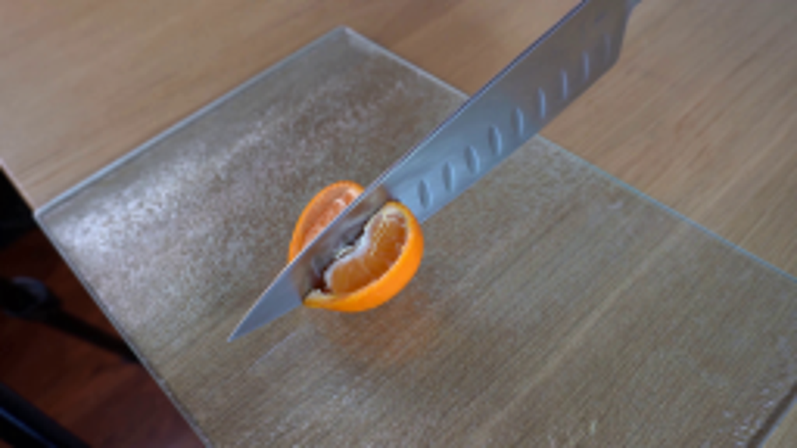
视觉工具实际返回图片 2
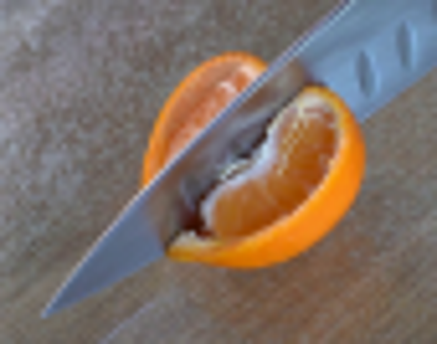
视觉工具实际返回图片 3
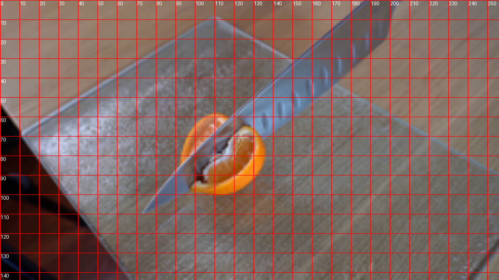
视觉工具实际返回图片 4

视觉工具实际返回图片 5
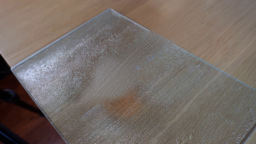
视觉工具实际返回图片 6
视觉工具实际返回图片 7
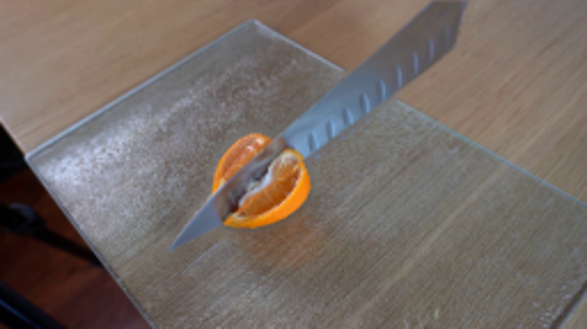
视觉工具实际返回图片 8
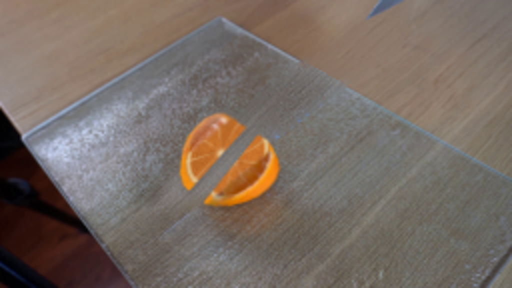
视觉工具实际返回图片 9
视觉工具实际返回图片 10
视觉工具实际返回图片 11
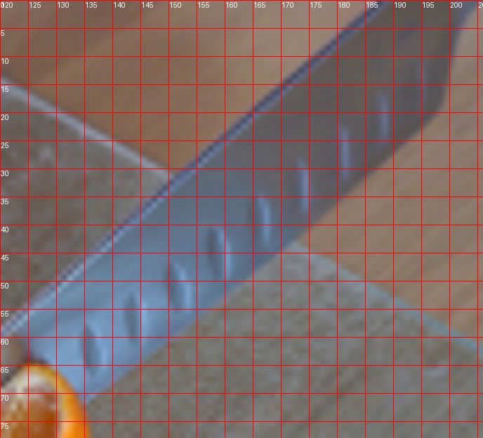
视觉工具实际返回图片 12
视觉工具实际返回图片 13
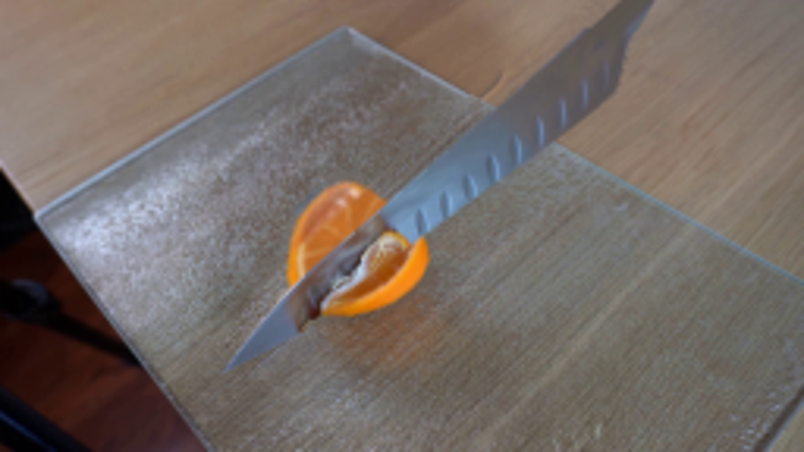
视觉工具实际返回图片 14

视觉工具实际返回图片 15
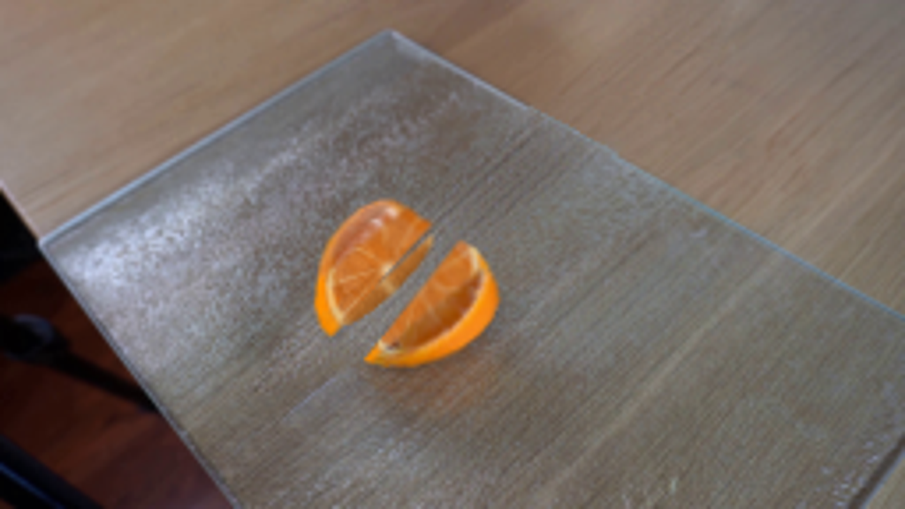
视觉工具实际返回图片 16
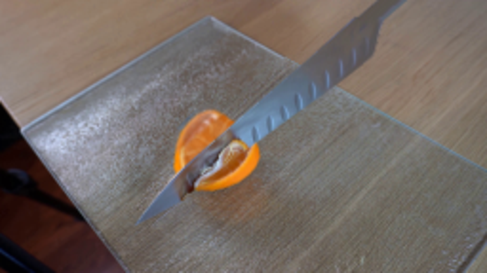
保存候选 3 份；完成命令 12 次；可验证图片返回 16 张。原始 API 响应与完整日志保留在本地。